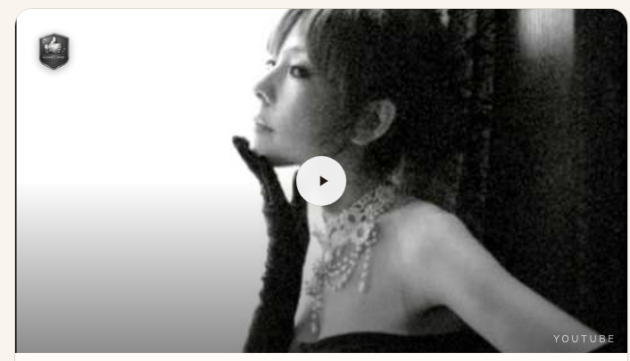
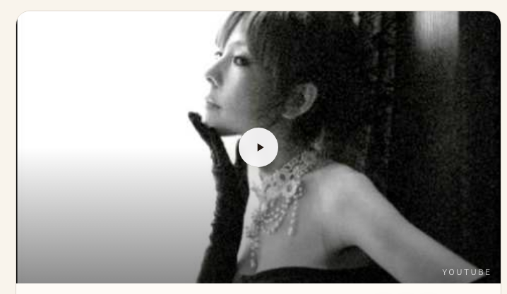
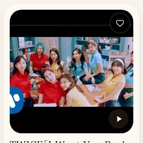

| 確認項目 | 結果 |
|---|---|
| 主役=cover-guide.tsxメイン動画 | 使う：曲ページのメイン動画のみ。禁止：これを縮めることは絶対にしない（今日の事故はこれをハーフサイズにしてしまった） |
| 半分=NextUpCard/RelatedCardsRow | 使う：原曲・カバー・パロディ・関連カード（複数枚を並べる時）。禁止：主役の代わりに使わない |
| 棚札=ShelfCardView | 使う：棚（ジャンル別一覧）のグリッド表示のみ。禁止：曲ページの主役・半分の代用にしない（正方形で横が切れるため） |
| 豆=SpokesHubCoversSection | 使う：将来『聴き比べ』機能を作る時の固定幅小サムネ(144px)。現状：実例データが少なく本番スクショが撮れなかった、正直に保留 |